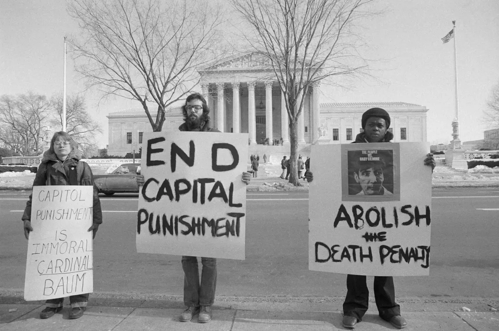

International Versus the US
During the 1990s-2000s, the U.S. government was pressured internationally to abolish the juvenile death penalty. The UN and EU were “increasingly vocal in the criticism of the U.S. mission on human rights” (Bradley, 487).
Mexico and Latin American countries protested the execution, citing violations of international agreements like the Vienna Convention on Consular Relations. Pressures intensified in the 1990s and early 2000s, as the global abolition of the juvenile death penalty expanded. In addition, it is noted, "amicus curiae filings by international organizations in U.S. death penalty cases are now becoming routine" (Bradley, 487). This increasing trend reflects rising global opposition to the U.S. executing juvenile offenders.
Contrastingly, the U.S. has consistently rejected international law restrictions on the juvenile death penalty, opting out of relevant treaty provisions. Bradley states, “The United States has persistently objected to—and thereby legally opted out of—any customary international law restriction on the juvenile death penalty" (Bradley, 485-486). The U.S. Supreme Court upheld juvenile executions in Stanford v. Kentucky (1989), stating the Eighth Amendment does not directly prohibit executing individuals aged 16-17.
The U.S. government also rejected ICCPR banning juvenile executions. “The United States reserves the right, subject to its Constitutional constraints, to impose capital punishment on any person (other than a pregnant woman) duly convicted under existing or future laws permitting the imposition of capital punishment, including such punishment for crimes committed by persons below eighteen years of age” (Bradley, 499). Furthermore, the U.S. is the only UN member that has not ratified the Convention on the Rights of Child (CRC).
Although this stance of the U.S. government and society protects the rights of the victims, they also hold the responsibility to protect the constitutional rights of juveniles to ensure legal practices are fair and just, fostering an environment where young individuals have the opportunity to reform the community.
This contrasting perspective highlights the different values upheld by the U.S. and the international consensus; emphasizing the responsibility of juveniles, holding them accountable for serious crimes through compatible consequences. In contrast, the UN, EU, and other organizations prioritize the protection of juvenile rights, advocating that minors—despite breaking the law—should not be subjected to harsh punishments.
Defendant Versus Victim
The perspective of the juvenile defendant regarding rights and responsibilities is often contradicting. Juveniles have the rights to protect themselves and the responsibility for the crime committed through accepting adequate punishments.
During the murder trial of Christopher Simmons's case, the prosecutor said, “Let's look at the mitigating circumstances… Age, he says. Think about age. Seventeen years old. Isn't that scary? Mitigating? Quite the contrary I submit” (Emens).
James Terry Roach was held from a poor family, was addicted to drugs, and had Hutington's disease. On the day of execution, Roach expressed, “To the families of the victims, my heart is still with you in your sorrow. May you forgive me just as I know that my Lord has done.”
Terry Berger-Smith said, “I would like my freedom, I would like a chance to be a normal person, and not a criminal and not a menace to society.”
On the other hand, the victim also has the right to be protected by law. The victim’s mother from Terry Berger-Smith’s case said, “The terror and suffering that [the victim] went through at the hands of this person, who despite being underage committed an adult crime, has left scars on her soul. It is devastating to witness the profound impact this cruel act has had on [the victim’s] life.” It is the victim’s responsibility to overcome the mental pressure from the incident.